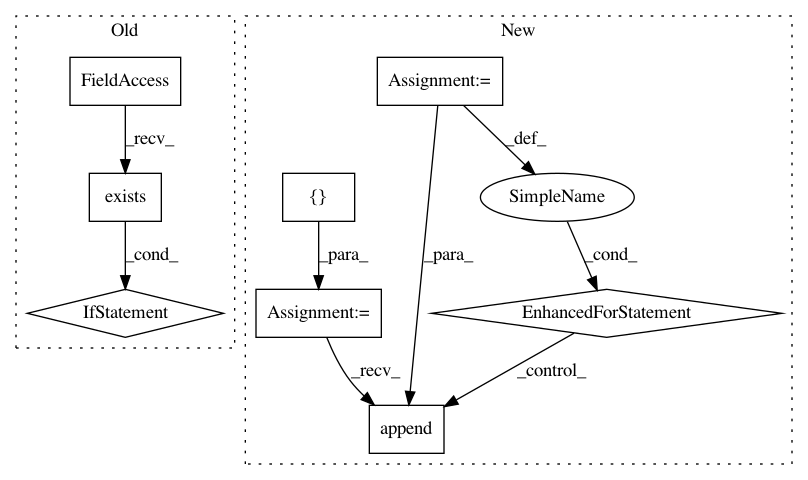

820de79517aaed577f9af9131f5ec87cd432f04a,mltsp/tests/test_custom_feats.py,,teardown,#,132
Before Change
def teardown():
Tear-down - remove tmp files
if os.path.exists(tmp_dir_path):
shutil.rmtree(tmp_dir_path, ignore_errors=True)
assert(not os.path.exists(tmp_dir_path))
for f in [os.path.join(cfg.MLTSP_PACKAGE_PATH,
"custom_feature_scripts/custom_feature_defs.py")]:
After Change
cft.remove_tmp_files_and_container("test", "/tmp/mltsp_test")
assert(not os.path.exists("/tmp/mltsp_test"))
for tmp_file in [os.path.join(cfg.TMP_CUSTOM_FEATS_FOLDER,
"custom_feature_defs.py"),
os.path.join(cfg.TMP_CUSTOM_FEATS_FOLDER,
"custom_feature_defs.pyc"),
os.path.join(cfg.TMP_CUSTOM_FEATS_FOLDER,
"__init__.pyc"),
os.path.join(os.path.join(cfg.PROJECT_PATH,
"copied_data_files"),
In pattern: SUPERPATTERN
Frequency: 3
Non-data size: 8
Instances
Project Name: cesium-ml/cesium
Commit Name: 820de79517aaed577f9af9131f5ec87cd432f04a
Time: 2015-02-06
Author: a.crellinquick@gmail.com
File Name: mltsp/tests/test_custom_feats.py
Class Name:
Method Name: teardown
Project Name: sony/nnabla
Commit Name: f59fb87d9613da132096e85b60cf6c0a8efc1cf6
Time: 2018-09-24
Author: Yukio.Oobuchi@sony.com
File Name: python/src/nnabla/utils/data_source_implements.py
Class Name: CacheDataSource
Method Name: __init__
Project Name: tensorflow/datasets
Commit Name: 1f65deb60665a460edf5e9238a70a2c597b3a12c
Time: 2020-09-24
Author: epot@google.com
File Name: tensorflow_datasets/core/load.py
Class Name:
Method Name: find_builder_dir